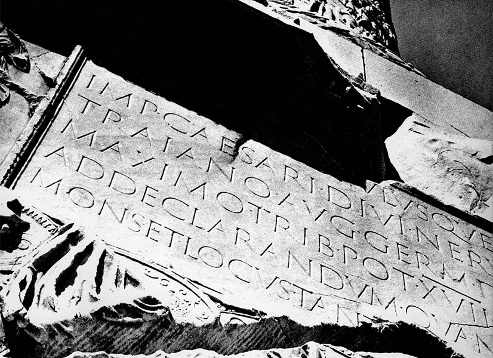

...

...
西文编排与排版一
This course is an introduction on the principles and techniques surrounding the practice of typography for latin characters. This course is mainly taught in English.
Goals
Requirements
Credits
To be confirmed
Required Materials
Attendance
Attend to all classes is essential. Un-excused absences will result in faults to the participation evaluation. Keep me updated if you need to miss class. In any case, the students are responsible for being up-to-date. Being late will be perceived the same way.
Evaluation
You will be evaluated according to your overall engagement in the projects. Your active participation during the semester will also be taken in account.
Assignment Criteria (General)
Schedule